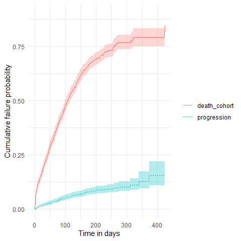
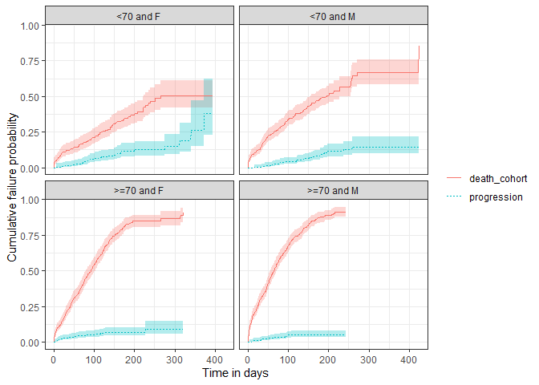

CohortSurvival contains functions for extracting and summarising survival data using the OMOP common data model.
Example usage
Create a reference to data in the OMOP CDM format
The CohortSurvival package is designed to work with data in the OMOP CDM format, so our first step is to create a reference to the data using the CDMConnector package.
For this example we´ll use a cdm reference containing the MGUS2 dataset from the survival package (which we transformed into a set of OMOP CDM style cohort tables). The MGUS2 dataset contains survival data of 1341 sequential patients with monoclonal gammopathy of undetermined significance (MGUS). For more information see ?survival::mgus2.
library(CDMConnector)
library(CohortSurvival)
library(dplyr)
library(ggplot2)
cdm <- CohortSurvival::mockMGUS2cdm()In our cdm reference we have three cohort tables of interest: 1) MGUS diagnosis cohort
cdm$mgus_diagnosis %>%
glimpse()
#> Rows: ??
#> Columns: 10
#> Database: DuckDB v1.1.3 [lopezk@Windows 10 x64:R 4.3.2/:memory:]
#> $ cohort_definition_id <int> 1, 1, 1, 1, 1, 1, 1, 1, 1, 1, 1, 1, 1, 1, 1, 1, 1…
#> $ subject_id <int> 1, 2, 3, 4, 5, 6, 7, 8, 9, 10, 11, 12, 13, 14, 15…
#> $ cohort_start_date <date> 1981-01-01, 1968-01-01, 1980-01-01, 1977-01-01, …
#> $ cohort_end_date <date> 1981-01-01, 1968-01-01, 1980-01-01, 1977-01-01, …
#> $ age <dbl> 88, 78, 94, 68, 90, 90, 89, 87, 86, 79, 86, 89, 8…
#> $ sex <fct> F, F, M, M, F, M, F, F, F, F, M, F, M, F, M, F, F…
#> $ hgb <dbl> 13.1, 11.5, 10.5, 15.2, 10.7, 12.9, 10.5, 12.3, 1…
#> $ creat <dbl> 1.30, 1.20, 1.50, 1.20, 0.80, 1.00, 0.90, 1.20, 0…
#> $ mspike <dbl> 0.5, 2.0, 2.6, 1.2, 1.0, 0.5, 1.3, 1.6, 2.4, 2.3,…
#> $ age_group <chr> ">=70", ">=70", ">=70", "<70", ">=70", ">=70", ">…- MGUS progression to multiple myeloma cohort
cdm$progression %>%
glimpse()
#> Rows: ??
#> Columns: 4
#> Database: DuckDB v1.1.3 [lopezk@Windows 10 x64:R 4.3.2/:memory:]
#> $ cohort_definition_id <int> 1, 1, 1, 1, 1, 1, 1, 1, 1, 1, 1, 1, 1, 1, 1, 1, 1…
#> $ subject_id <int> 56, 81, 83, 111, 124, 127, 147, 163, 165, 167, 18…
#> $ cohort_start_date <date> 1978-01-30, 1985-01-15, 1974-08-17, 1993-01-14, …
#> $ cohort_end_date <date> 1978-01-30, 1985-01-15, 1974-08-17, 1993-01-14, …- Death cohort
cdm$death_cohort %>%
glimpse()
#> Rows: ??
#> Columns: 4
#> Database: DuckDB v1.1.3 [lopezk@Windows 10 x64:R 4.3.2/:memory:]
#> $ cohort_definition_id <int> 1, 1, 1, 1, 1, 1, 1, 1, 1, 1, 1, 1, 1, 1, 1, 1, 1…
#> $ subject_id <int> 1, 2, 3, 4, 5, 6, 7, 8, 10, 11, 12, 13, 14, 15, 1…
#> $ cohort_start_date <date> 1981-01-31, 1968-01-26, 1980-02-16, 1977-04-03, …
#> $ cohort_end_date <date> 1981-01-31, 1968-01-26, 1980-02-16, 1977-04-03, …MGUS diagnosis to death
We can get survival estimates for death following MGUS diagnosis like so:
MGUS_death <- estimateSingleEventSurvival(cdm,
targetCohortTable = "mgus_diagnosis",
outcomeCohortTable = "death_cohort"
)
MGUS_death %>%
glimpse()
#> Rows: 1,354
#> Columns: 13
#> $ result_id <int> 1, 1, 1, 1, 1, 1, 1, 1, 1, 1, 1, 1, 1, 1, 1, 1, 1, 1,…
#> $ cdm_name <chr> "mock", "mock", "mock", "mock", "mock", "mock", "mock…
#> $ group_name <chr> "target_cohort", "target_cohort", "target_cohort", "t…
#> $ group_level <chr> "mgus_diagnosis", "mgus_diagnosis", "mgus_diagnosis",…
#> $ strata_name <chr> "overall", "overall", "overall", "overall", "overall"…
#> $ strata_level <chr> "overall", "overall", "overall", "overall", "overall"…
#> $ variable_name <chr> "outcome", "outcome", "outcome", "outcome", "outcome"…
#> $ variable_level <chr> "death_cohort", "death_cohort", "death_cohort", "deat…
#> $ estimate_name <chr> "estimate", "estimate_95CI_lower", "estimate_95CI_upp…
#> $ estimate_type <chr> "numeric", "numeric", "numeric", "numeric", "numeric"…
#> $ estimate_value <chr> "1", "1", "1", "0.9697", "0.9607", "0.9787", "0.9494"…
#> $ additional_name <chr> "time", "time", "time", "time", "time", "time", "time…
#> $ additional_level <chr> "0", "0", "0", "1", "1", "1", "2", "2", "2", "3", "3"…Now that we have our results, we can quickly create a plot summarising survival over time.
plotSurvival(MGUS_death)Among others, we can check the survival summary of our target and outcome cohorts of interest:
tableSurvival(MGUS_death, times = c(30,60,180))| CDM name | Target cohort | Outcome name |
Estimate name
|
||||||
|---|---|---|---|---|---|---|---|---|---|
| Number records | Number events | Median survival (95% CI) | Restricted mean survival (SE) | 30 days survival estimate | 60 days survival estimate | 180 days survival estimate | |||
| mock | mgus_diagnosis | death_cohort | 1,384 | 963 | 98.00 (92.00, 103.00) | 133.00 (4.00) | 79.39 (77.28, 81.55) | 66.15 (63.70, 68.70) | 25.90 (23.35, 28.72) |
As well as estimating survival for our cohort overall, we can also estimate survival by strata. These strata are based on variables that have been added to our target cohort previously as columns.
MGUS_death <- estimateSingleEventSurvival(cdm,
targetCohortTable = "mgus_diagnosis",
outcomeCohortTable = "death_cohort",
strata = list(c("age_group"),
c("sex"),
c("age_group", "sex"))
)
plotSurvival(MGUS_death,
colour = "strata_level",
facet= "strata_name")
Estimating survival accounting for a competing risk
The package also allows to estimate survival of both an outcome and competing risk outcome together. We can then stratify, see information on events or summarise the estimates in the same way we did for the single event survival analysis.
MGUS_death_prog <- estimateCompetingRiskSurvival(cdm,
targetCohortTable = "mgus_diagnosis",
outcomeCohortTable = "progression",
competingOutcomeCohortTable = "death_cohort"
)
plotSurvival(MGUS_death_prog, cumulativeFailure = TRUE,
colour = "variable_level")
As with single event survival, we can stratify our competing risk analysis.
MGUS_death_prog <- estimateCompetingRiskSurvival(cdm,
targetCohortTable = "mgus_diagnosis",
outcomeCohortTable = "progression",
competingOutcomeCohortTable = "death_cohort",
strata = list(c("age_group", "sex"))
)
plotSurvival(MGUS_death_prog %>%
dplyr::filter(strata_name != "overall"),
cumulativeFailure = TRUE,
facet = "strata_level",
colour = "variable_level")
Disconnect from the cdm database connection
cdmDisconnect(cdm)Additional information
You can check additional functionality of the package on its website.